La série 4000 est une famille classique de circuits CMOS : portes logiques, bascules, compteurs, registres à décalage, interrupteurs analogiques, décodeurs… Ce sont les briques de base de l'électronique numérique, l'équivalent CMOS de la série 7400 (TTL). Peu coûteux et très sobres, ils restent parfaits pour les montages sans microcontrôleur.
Liste des circuits
Cliquez sur un circuit ou sur son brochage pour ouvrir sa fiche : caractéristiques, rôle de chaque broche et simulation d'un montage classique. Les boîtiers sont vus de dessus, encoche vers le haut : la broche 1 est en haut à gauche, puis la numérotation tourne dans le sens inverse des aiguilles d'une montre.
| Circuit | Brochage | Description | Catégorie |
|---|---|---|---|
| CD4001 | 4 portes NOR à 2 entrées |
Portes | |
| CD4002 | 2 portes NOR à 4 entrées |
Portes | |
| CD4008 |
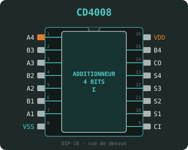 |
Additionneur complet 4 bits |
Arithmétique |
| CD4011 | 4 portes NAND à 2 entrées |
Portes | |
| CD4012 | 2 portes NAND à 4 entrées |
Portes | |
| CD4013 |
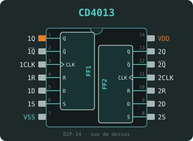 |
2 bascules D avec Set / Reset |
Bascules |
| CD4014 |
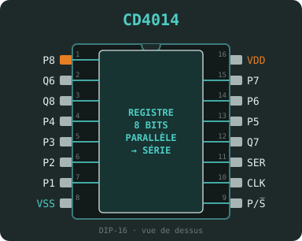 |
Registre à décalage 8 bits, chargement parallèle synchrone |
Registres |
| CD4015 |
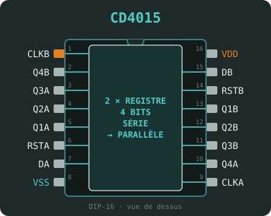 |
2 registres à décalage 4 bits, entrée série |
Registres |
| CD4016 |
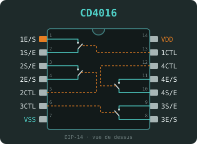 |
4 interrupteurs analogiques bidirectionnels |
Analogique |
| CD4017 |
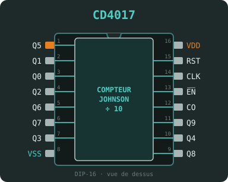 |
Compteur décimal Johnson, 10 sorties décodées |
Compteurs |
| CD4020 |
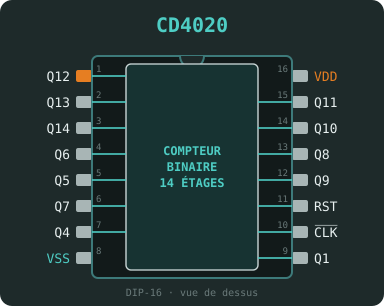 |
Compteur binaire asynchrone 14 étages |
Compteurs |
| CD4021 |
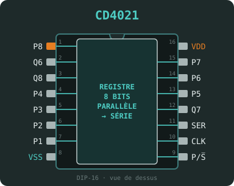 |
Registre à décalage 8 bits, chargement parallèle asynchrone |
Registres |
| CD4023 |
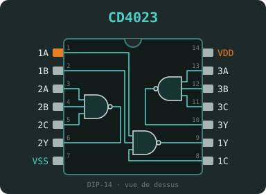 |
3 portes NAND à 3 entrées |
Portes |
| CD4024 |
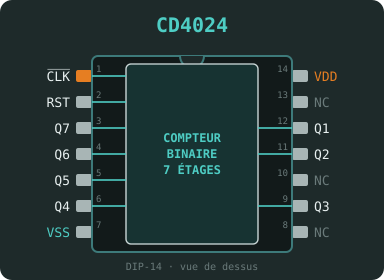 |
Compteur binaire asynchrone 7 étages |
Compteurs |
| CD4025 |
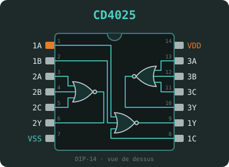 |
3 portes NOR à 3 entrées |
Portes |
| CD4026 |
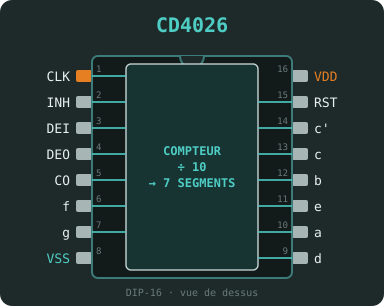 |
Compteur décimal avec sorties 7 segments |
Compteurs |
| CD4027 |
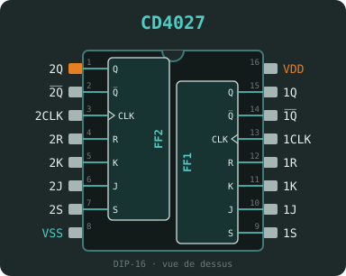 |
2 bascules JK avec Set / Reset |
Bascules |
| CD4028 |
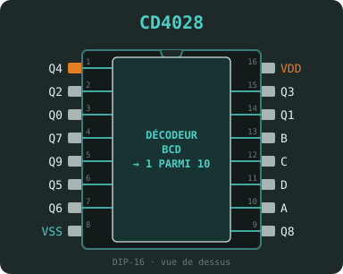 |
Décodeur BCD → décimal (1 parmi 10) |
Décodeurs |
| CD4029 | Compteur haut / bas préréglable, binaire ou BCD |
Compteurs | |
| CD4030 |
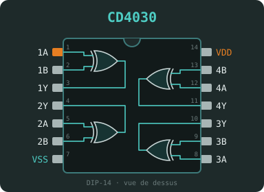 |
4 portes XOR à 2 entrées |
Portes |
| CD4040 |
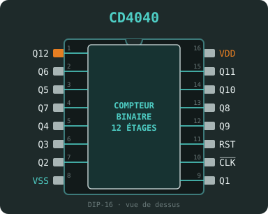 |
Compteur binaire asynchrone 12 étages |
Compteurs |
| CD4046 |
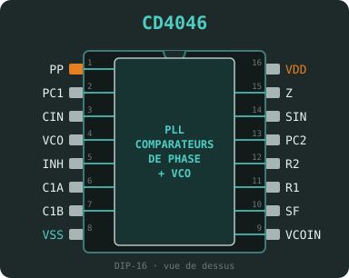 |
Boucle à verrouillage de phase (PLL) avec VCO |
Temporisation |
| CD4047 |
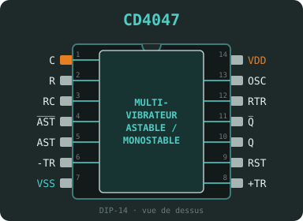 |
Multivibrateur monostable / astable |
Temporisation |
| CD4049 |
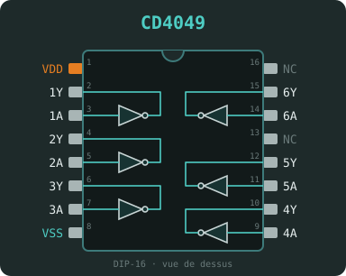 |
6 buffers inverseurs, convertisseurs de niveau |
Schmitt / buffers |
| CD4050 |
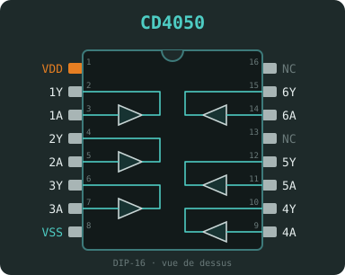 |
6 buffers non inverseurs, convertisseurs de niveau |
Schmitt / buffers |
| CD4051 |
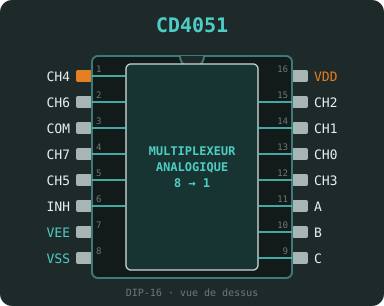 |
Multiplexeur / démultiplexeur analogique 8 voies |
Analogique |
| CD4052 |
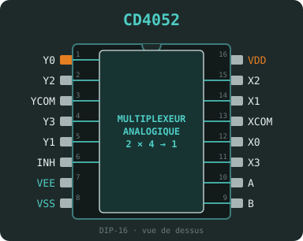 |
2 multiplexeurs / démultiplexeurs analogiques 4 voies |
Analogique |
| CD4053 |
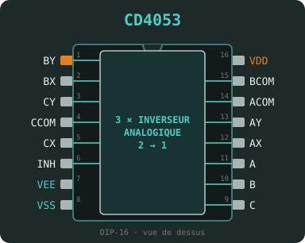 |
3 multiplexeurs / démultiplexeurs analogiques 2 voies |
Analogique |
| CD4060 |
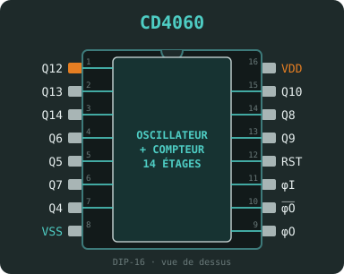 |
Compteur binaire 14 étages avec oscillateur intégré |
Compteurs |
| CD4066 |
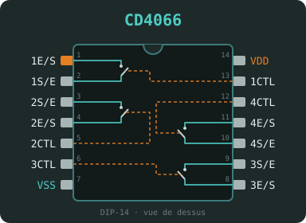 |
4 interrupteurs analogiques bidirectionnels (Ron faible) |
Analogique |
| CD4069 |
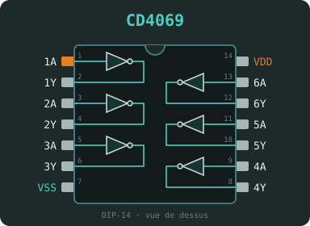 |
6 inverseurs |
Portes |
| CD4070 | 4 portes XOR à 2 entrées |
Portes | |
| CD4071 | 4 portes OR à 2 entrées |
Portes | |
| CD4072 | 2 portes OR à 4 entrées |
Portes | |
| CD4073 |
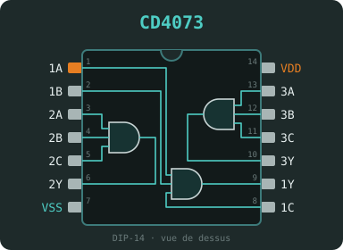 |
3 portes AND à 3 entrées |
Portes |
| CD4075 |
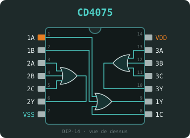 |
3 portes OR à 3 entrées |
Portes |
| CD4077 | 4 portes XNOR à 2 entrées |
Portes | |
| CD4081 | 4 portes AND à 2 entrées |
Portes | |
| CD4082 |
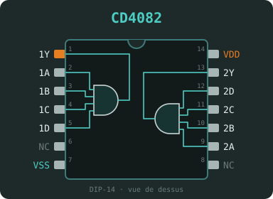 |
2 portes AND à 4 entrées |
Portes |
| CD4093 | 4 portes NAND à 2 entrées à trigger de Schmitt |
Schmitt / buffers | |
| CD4094 |
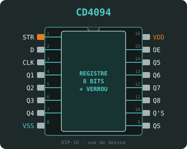 |
Registre à décalage 8 bits avec verrou et sorties 3 états |
Registres |
| CD4510 |
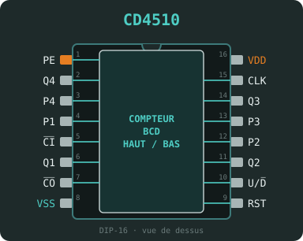 |
Compteur BCD haut / bas préréglable |
Compteurs |
| CD4511 |
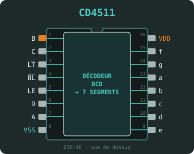 |
Décodeur BCD → 7 segments avec verrou |
Décodeurs |
| CD4518 |
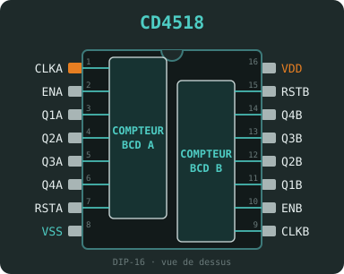 |
2 compteurs BCD synchrones |
Compteurs |
| CD4520 | 2 compteurs binaires 4 bits synchrones |
Compteurs | |
| CD4538 |
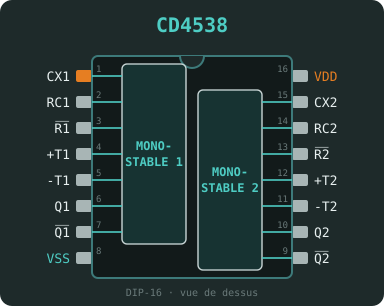 |
2 monostables de précision redéclenchables |
Temporisation |
| CD40106 |
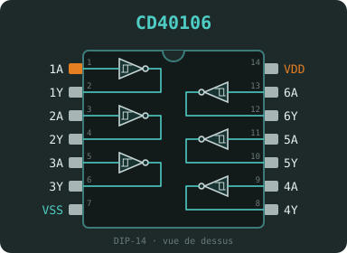 |
6 inverseurs à trigger de Schmitt |
Schmitt / buffers |
| Aucun circuit ne correspond à la recherche. | |||
Bon à savoir
Page inspirée de la liste de la série 4000 de Build Electronic Circuits. Les brochages ont été redessinés aux couleurs du site ; vérifiez toujours la fiche technique (datasheet) du fabricant avant de câbler.